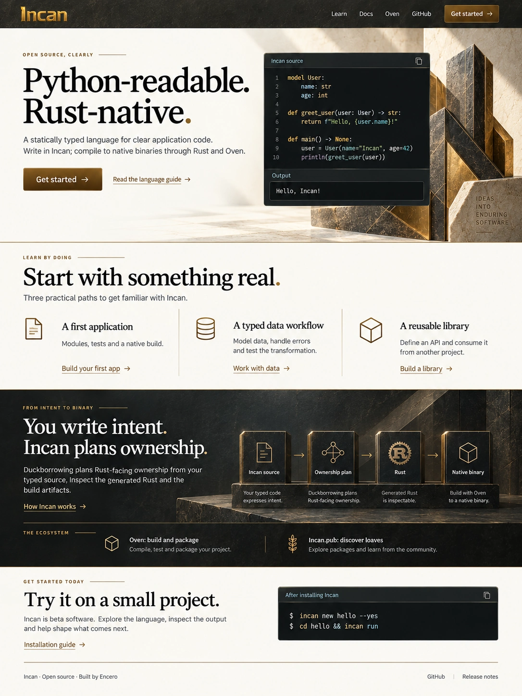
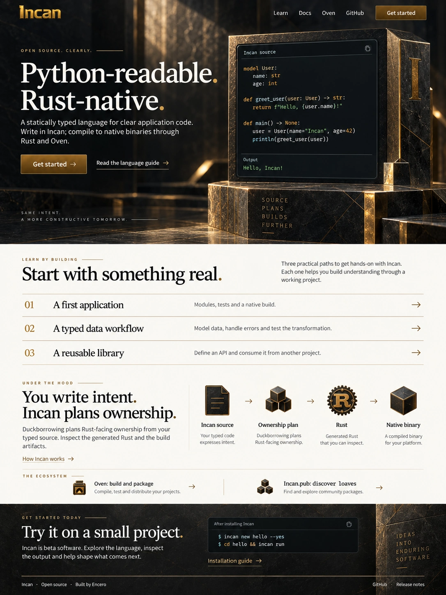
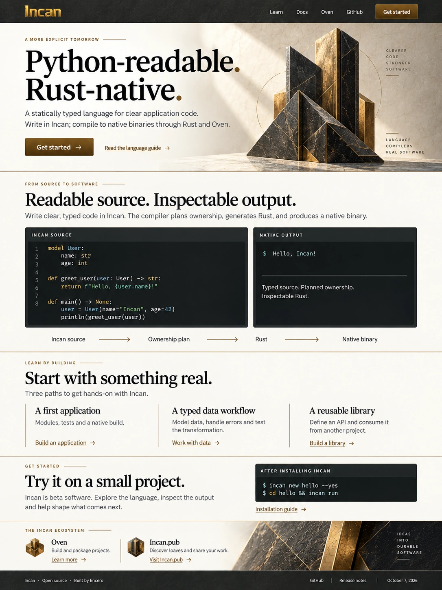

Incan.io homepage mockups.
Current revision. Open the developer homepage with language examples, the logo and Incus observer portrait.
Original three visual concepts, using the charcoal, brass and ivory direction from Incan.pub. These are static mockup images.
The proposed content brings real Incan source forward, combines the repeated compiler explanations, and gives readers three practical starting points. The language’s beta status stays visible.
Option 1
Open full-size image

Option 2
Open full-size image

Option 3
Open full-size image
